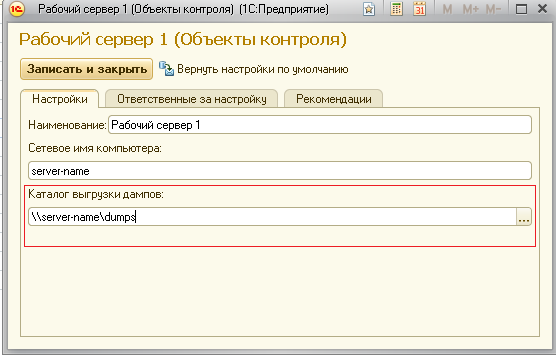

Это сообщение означает, что в каталоге выгрузки дампов ЦКК обнаружил файл дампа, который уже встречался ранее. После обработки дампа ЦКК удаляет файлы дампов, поэтому повторное обнаружение файла говорит, о том, что в работе контрольной процедуры сбора дампов имеются неисправности.
Рекомендуется проверить путь, указанный в настройках объекта контроля.
